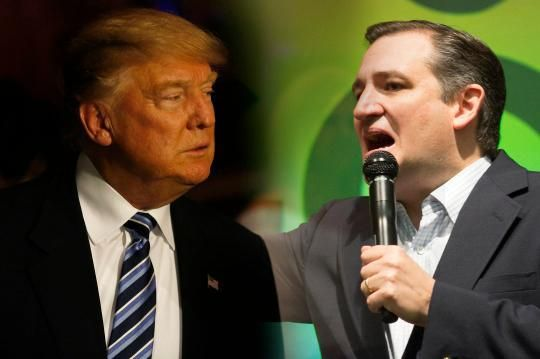

<div style="width:100%">
    <div class="projectHead product">
        <div class="wrap">
            <div class="text left">
                <h1>What D.C. Republicans will do if it’s Trump vs. Cruz</h1>
                <p>Imagine you have this incredibly valuable sports car, and when you drive it up to a valet stand there are two guys anxiously vying to take the keys. One of them looks wild-eyed and agitated, like he just drank seven Red Bulls. The other is a guy you remember from high school, except that you hated each other and he’s eyeing the hubcaps with contempt.</p>

                <p>Now you have a rough idea of how Republican insiders in Washington are feeling this week. With the season of choosing passing its midpoint, governing Republicans are slowly resigning themselves to what looks like a two-man race between the unpredictable Donald Trump and Ted Cruz, a man so universally disliked that if you Google “hated senator,” every single link that pops up is about him.</p>

                <p>It’s an agonizing thing for them to contemplate, but in conversations with a half dozen of the leading Republican strategists and lobbyists this week, it became clear that a solid consensus is forming as to which guy they would rather see get the keys. When it comes to Trump versus Cruz at the top of the ticket, most in the so-called establishment would prefer the devil they know to the daredevil they don’t.</p>

                <p>For the moment, of course, Trump looks very hard to stop. And if you’ve been paying attention to his debates and election night speeches lately, you may have noticed that — in between recitations of every poll he’s ever read, and the rambling monologues on genitalia and civil jurisprudence, and the brandishing of his personal steaks and his own print magazine (who knew?) — he’s been consciously trying to reach some kind of rapprochement with party insiders.</p>

                <p>On Tuesday night, for instance, after winning in Michigan and Mississippi, Trump used the opening minutes of his victory speech/news conference/traveling revue to call for party unity. He managed to cough up some kind words for Paul Ryan and Lindsey Graham and even Mitt Romney, whom he said he didn’t really know, despite having recently called him a “dope” and a “loser” and “one of the dumbest and worst candidates in the history of Republican politics.”</p>
            </div>
            
            <div ng-click="handleMyButton()">ONE</div>
        </div>
    </div>
</div>